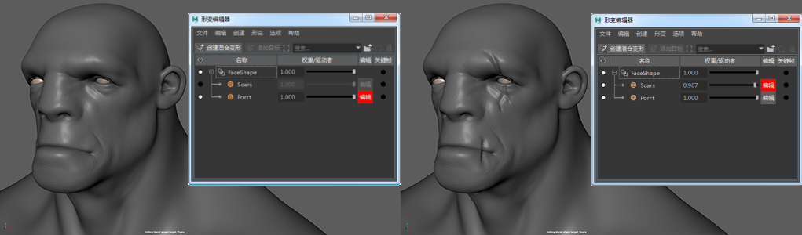
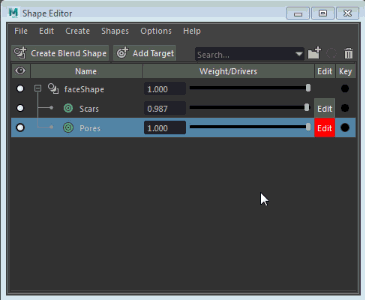

在网格上雕刻细节时，可以使用融合变形目标作为雕刻层。这样，您能够以堆叠方式构建雕刻效果，单独构建不同种类的雕刻（如褶皱和毛孔），或尝试以非破坏性方式对模型应用新雕刻。
设置层以进行雕刻
- 转到或切换到“雕刻工作区”(Sculpting Workspace)，以打开形变编辑器(Shape Editor)。
- 选择要进行雕刻的网格，然后单击“形变编辑器”(Shape Editor)中的“创建融合变形”(Create Blend Shape)。
- 单击“添加目标”(Add Target)按钮以添加第一个层。
默认情况下，该层将成为活动“编辑”(Edit)层。任何雕刻操作均会添加到该层中。
- 单击“添加目标”(Add Target)以添加其他层。
注： 当前
“编辑”(Edit)层始终标记为红色。网格的任何雕刻操作或变换均在该层上发生。若要更改活动
“编辑”(Edit)层，请单击要激活的层旁边的
“编辑”(Edit)按钮。

在层上雕刻后，可以使用几种不同的方式减弱/隐藏该层的效果。
减弱/隐藏层效果
- 在“形变编辑器”(Shape Editor)中拖动目标形状旁边的滑块以更改其权重。
- 单击目标形状左侧的可见性图标以完全禁用该层的效果。
- 在层上单击鼠标右键，然后选择“单放”(Solo)以禁用所有其他层。
注： 您可以在“形变编辑器”(Shape Editor)中使用鼠标中键拖动层以对其进行重新排序。